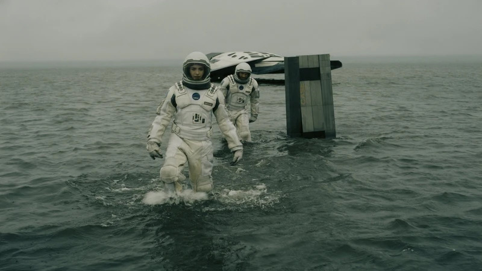

Interstelar
10 Duração: 169 min Gênero: Aventura/Ficção Científica Ano: 2014
Sinopse
Em um futuro em que a Terra está ficando inabitável, as colheitas morrem e a humanidade corre risco de extinção.
Cooper, ex-piloto da NASA que virou fazendeiro, descobre uma missão secreta que procura um novo lar para a humanidade além da nossa galáxia.
Para isso, ele e uma equipe de astronautas atravessam um buraco de minhoca, enfrentando planetas hostis, o tempo e a saudade da família que ficou para trás.

Trailer
Elenco
-
Matthew McConaugheyCooper
-
Anne HathawayAmelia Brand
-
Michael CaineProfessor Brand
-
Matt DamonDr. Mann
-
Mackenzie FoyMurph (jovem)
-
Timothée ChalametTom (adulto)